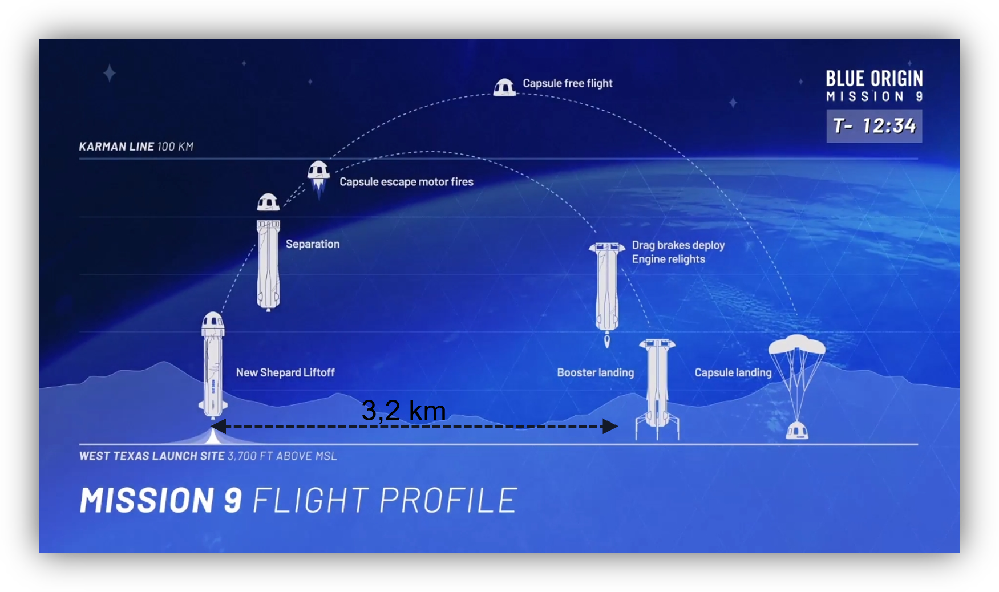
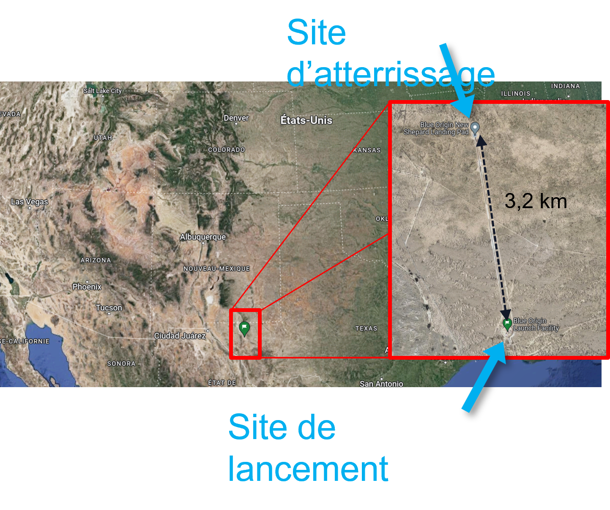
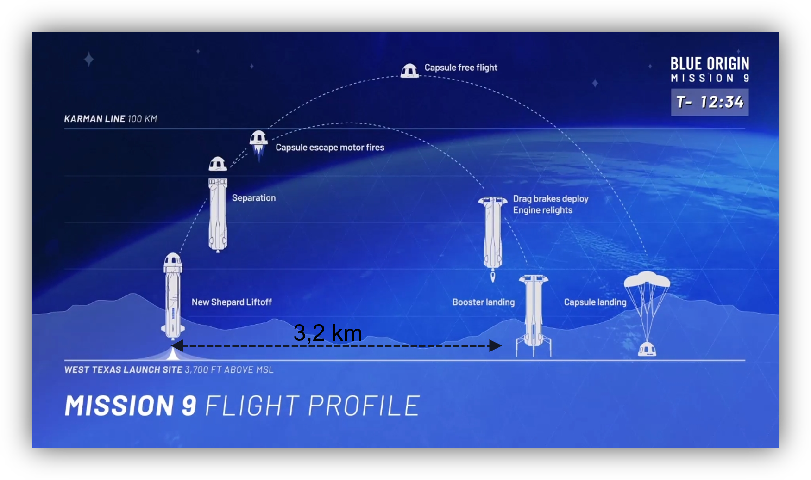
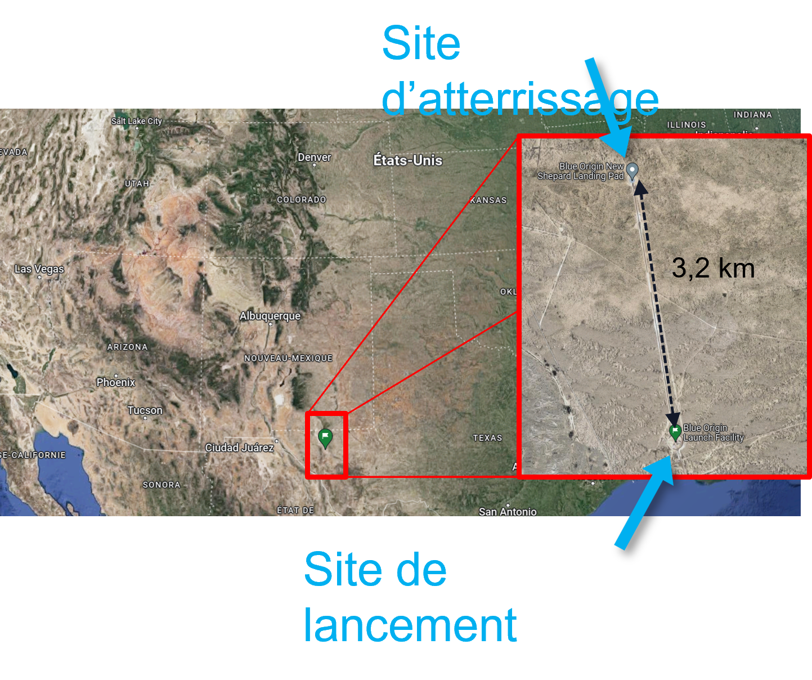

Base de données
Données = demo
Base sur NASA <https://techport.nasa.gov/view/116144?fbclid=IwAR1C1g9ue-6Q-pUHyxb45yE6VOPpWl2Yi1jHuWZxrmFZ4wKXlNqutcjHKQ0>
 Données = demo
Base sur NASA <https://techport.nasa.gov/view/116144?fbclid=IwAR1C1g9ue-6Q-pUHyxb45yE6VOPpWl2Yi1jHuWZxrmFZ4wKXlNqutcjHKQ0>
 